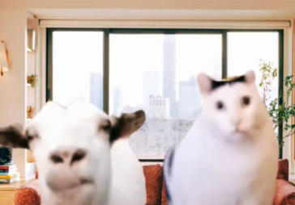

Когда учитель объясняет флексбокс
Основано на невымышленных персонажах КОТЕ И КОЗЛЕ
Год создания
2023
Оригинальное название
Козел и кот (Rambling goat and Huh cat)
Тэги
#непонимание #растерянность #а?
"Козел и кот" — это мем, где козел, бормочущий что-то быстро и бессвязно, представляет собой болтливого и назойливого человека. В то время как кот, высказывающийся с "а?", отражает абсолютное непонимание
Основой для мема послужили два разных видео. Первое с козлом всплыло на YouTube в 2013 году. Второе, с котом Бендером, стало известным в 2021 году, когда к нему добавили реакцию "Huh?". К октябрю 2023 года эти два мема были совмещены в один. 7 октября @vivi000.o загрузил один из первых роликов на эту тему, описав ситуацию как: "Когда учитель пытается донести до меня математику". Вскоре мем "Козел и кот" стал популярным в русскоязычной среде.
Суть мема заключается в том, что один персонаж говорит или объясняет, а другой его абсолютно не понимает. Однако стоит помнить, что первоначальный мем с котом Бендером передавал иное настроение: кот жалобно мяукал и кивал головой, выражая моменты, когда кто-то настойчиво что-то просит.